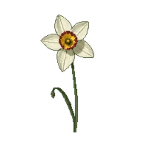

Daffodil 'Actaea'
Narcissus poeticus var. recurvus 'Actaea'

Daffodil 'Actaea' is a bulb for bulb layer, suited to full sun to partial shade and clay, loam or chalk, flowering Apr.
| Type | Bulb |
|---|---|
| Mature height | 40 cm |
| Spread | 15 cm |
| Aspect | full sun to partial shade |
| Foliage | Deciduous |
| Hardiness | USDA 3a-9a, RHS H6 |
| Pollinator-friendly | Yes |
| Pet-safe | No |
Where to use it in a border
At around 40 cm, it sits best through the middle of a border, between taller structure behind and edging in front. Give it about 15 cm of room to spread, roughly 7 to the metre when planted in a drift. It is hardy across USDA zones 3a to 9a and rated H6 by the RHS, so check it suits your area before planting.
It appears in our lists of full sun, clay soil, chalk soil, pollinator-friendly plants.
Flowering through the year
Worth knowing
- Not recorded as pet-safe; site it away from pets that graze if that matters to you.
- Its flowers are valued by bees and other pollinators.
Good companions
Plants that share its conditions and style, chosen to complement its place in the border:
- Allium 'Purple Sensation'to flower when it does not
- American Wisteria 'Amethyst Falls'for height behind it
- Anchusa 'Loddon Royalist'to flower when it does not
- Apple 'Bramley's Seedling'for height behind it
- Apple 'Cox's Orange Pippin'for height behind it
- Avensto edge in front
Garden styles
Cottage garden Wildlife garden
See Daffodil 'Actaea' set in a full border, with spacing and companions worked out for your own conditions, in Border Builder.
Sources
Bloom timing and hardiness drawn from:
- MoBot Plant Finder (missouribotanicalgarden.org, 2026-05)
- UMN Extension (extension.umn.edu, 2026-05)
- NC State Extension (plants.ces.ncsu.edu, 2026-05)
- RHS (rhs.org.uk, 2026-05)